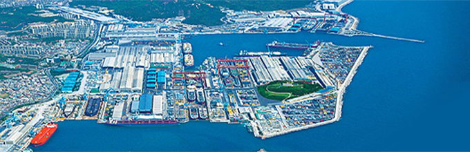
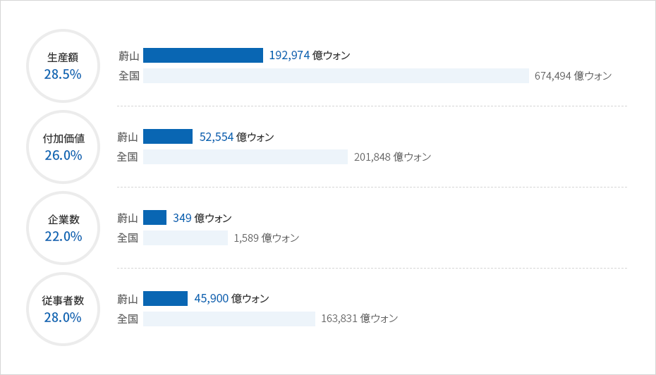
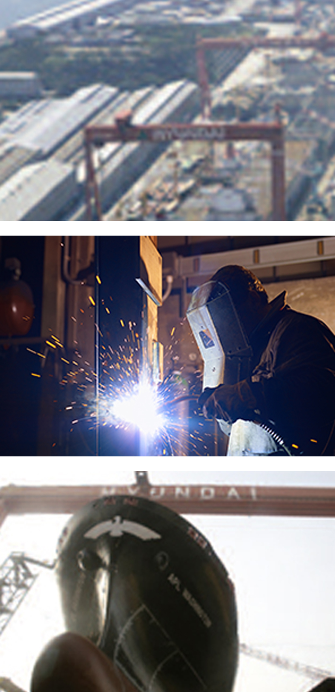

造船海洋産業
- Home
- 主要産業
- 造船海洋産業
造船海洋産業
蔚山の2017年海洋産業は6000百万ドルを受注しました。 これは韓国内船舶生産量の33%で世界トップの造船 海洋都市として成長しました。
蔚山には世界最大の造船海洋メーカーの現代重工業と世界5位の現代尾浦造船があります。
現代重工業は608万㎡の敷地に年間9,200千GTを生産できる施設を保有する世界最大の造船海洋メーカーです。
現代尾浦造船は、年間1,933千GTを生産できる施設を有し、生産量では世界5位を占めています。
今後FPSO, LNG, Shale Gas船等を育成し世界的な造船海洋大国へと発展してまいります。


蔚山の造船海洋企業の現況(2012年)


생산액(28.5%) - 울산(192,974억원), 전국(674,494억원)
부가가치(26.0%) - 울산(52,554억원), 전국(201,848억원)
사업체수(22.0%) - 울산(349억원), 전국(1,589억원)
종사자수(28.0%) - 울산(45,900억원), 전국(163,831억원)

蔚山の造船海洋産業の現状(2017年)
| 区分 | 現代重工業 | 現代尾浦造船 |
|---|---|---|
| 設立日 | ’73. 12. 28 | ’75. 4. 28 |
| 従業員(人) | 16,504 | 3,212 |
| 売上額(億ウォン) | 154,688 | 24,534 |
| 受注量(DTW) | 96 / 11,817 | 109 / 4,260 |
| 建造量(DTW) | 53 / 7,809 | 53 / 2,162 |
| 輸出額(億ウォン) | 181,106 | 41,493 |
※[出所] 2011事業報告書(金融監督院公示資料)受注·建造量は2011造船資料集(韓国造船協会)
